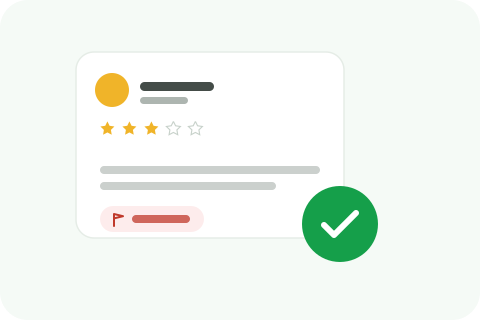

A sudden wave of negative reviews naturally raises the question of who's behind it. Here's what actually points toward a coordinated campaign, and why it's worth being careful before assuming who.

Suspecting a competitor is a serious claim, even informally, and it can lead businesses toward public accusations or aggressive responses based on assumption rather than evidence. The patterns below are signals worth investigating, not proof on their own. A sudden spike in bad reviews can have other causes entirely, a genuine service problem, a product recall, a viral complaint, so the first step is ruling those out honestly before looking elsewhere.
A handful of negative reviews posted within a tight window, hours or a single day apart, stands out more than the same number spread naturally over weeks. Genuine dissatisfaction tends to arrive at the pace of real customer experiences. A cluster doesn't prove coordination, but it's the first thing worth noting.
Reviews that share unusual phrasing, the same specific (and inaccurate) claim repeated almost verbatim, or oddly similar sentence structure across different accounts, are a stronger signal than timing alone. Real, independent complaints from unrelated people rarely converge on identical wording.
Profiles created recently, with no other reviews, no profile photo, and nothing else to suggest a genuine, active account, are more consistent with accounts created specifically to post a review than with a typical customer. This isn't definitive on its own, some genuine customers really do have sparse profiles, but it adds weight alongside other signals.
A review describing a transaction, date, or interaction that has no match anywhere in your systems is worth noting regardless of who's behind it, since it's the same evidence that supports a legitimate removal flag. If several such reviews share this trait along with timing and language patterns, that's a meaningfully stronger case than any one signal alone.
Even a strong pattern is a reason to document and report through the platform's own fake-review process, not a basis for publicly naming a competitor as the source. Making that accusation without solid proof carries real reputational and even legal risk of its own, this is exactly the kind of claim that could expose you to a defamation question rather than resolve one.
Before any of the above patterns matter, it's worth checking whether something more mundane explains a review spike: a social media post or local news mention that drove sudden traffic and attention, a pricing or policy change that genuinely upset a batch of real customers at once, or a platform-side issue like the spam-detection spikes Google has acknowledged affecting unrelated businesses. Jumping straight to "a competitor is behind this" skips past explanations that are, in practice, far more common.
Coordinated fake review campaigns violate platform policy regardless of who's behind them, a competitor, a disgruntled former employee, or an unrelated bad actor. That means your report doesn't need to identify or prove who's responsible to be effective, it needs to show the reviews themselves don't reflect genuine experiences. Keeping the report focused on that, rather than on a specific accusation, is both the safer approach and, in most cases, the more successful one.
Document the pattern, timing, language, account activity, and record mismatches, and use it to support fake-review reports through the platform, the same process covered elsewhere on this blog. The goal is getting the reviews removed on their actual merits, a policy violation, not winning an argument about who wrote them.
We'll document the pattern and pursue removal through the right channel, on the merits that actually matter.